npm On-Site allows you to run your own private npm registry and website behind the firewall. It is designed to run on several different infrastructures. One of the easiest ways to run it, which we test extensively, is using Amazon Web Services. In this article, we'll show you exactly how to set this up.
Here's the general idea:
That's all it takes to get up and running!
So let's start by logging into the AWS Console. From there, click on "EC2" in the top left to access the EC2 Dashboard.
In AWS, a private virtual server is called an "EC2 instance". We will need to create, or "launch", an instance that can run npm On-Site. Before we can launch an instance, however, we'll need a "security group" to allow inbound TCP communication on the ports the npm On-Site services will listen on. An AWS security group is a set of rules defining what type of network traffic is allowed for an EC2 instance.
To create a security group, first click "Security Groups" under "NETWORK & SECURITY" in the vertical navigation bar on the left. Then click the blue "Create Security Group" button near the top.
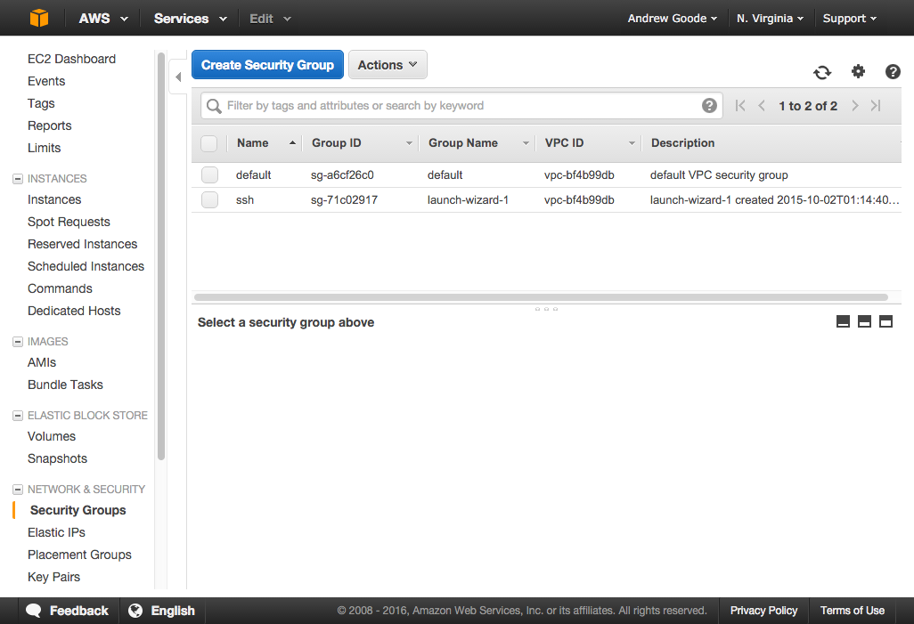
The ports needed for inbound traffic include:
Port | Reason ---- | -----------------8080 | Registry 8081 | Website 8082 | Auth endpoints 8800 | Admin web console
Also note you will need SSH access to your instance, so include port 22 in your security group. Give your security group a name that you will recognize later, like "npmo":
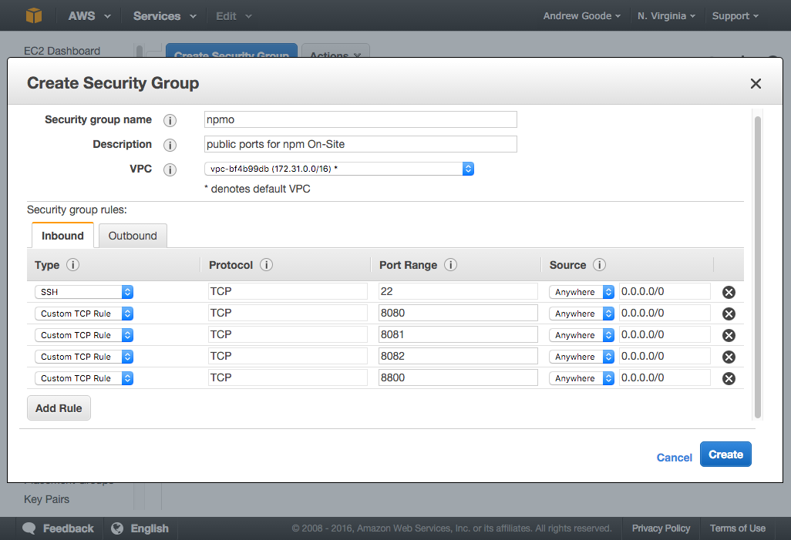
In a production environment, you will probably want to front the registry and website with a load balancer or routing layer that uses a DNS name and standard ports (80 for HTTP and 443 for HTTPS), but for purposes of this walkthrough we'll do without that initially and just access the services directly on the ports they bind to.
Now that we have a security group defined, we are ready to launch an EC2 instance.
Click on "Instances" under "INSTANCES" in the left navigation panel, and then click the blue "Launch Instance" button.

This will start the multi-step instance wizard. The first step is to select a base Amazon Machine Image (or AMI) to start from. npm On-Site supports Ubuntu 14+, CentOS 7, and RHEL 7. For this walkthrough, we'll assume CentOS 7. You can use the top "centos 7" search result in the "AWS Marketplace". Just make sure it's 64-bit. Click the blue "Select" button.
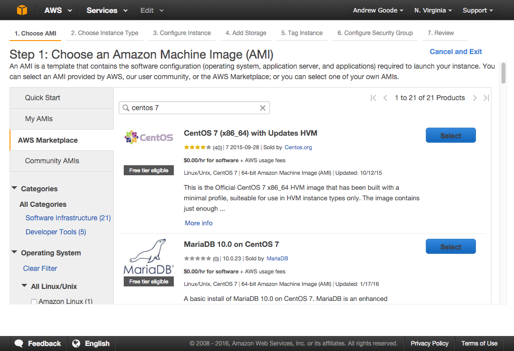
The next step is to choose an instance type, which determines how many resources your server will be allocated with. We recommend using an m3.large type. Select the radio button in the first column of the table and click the "Next: Configure Instance Details" button on the bottom right.
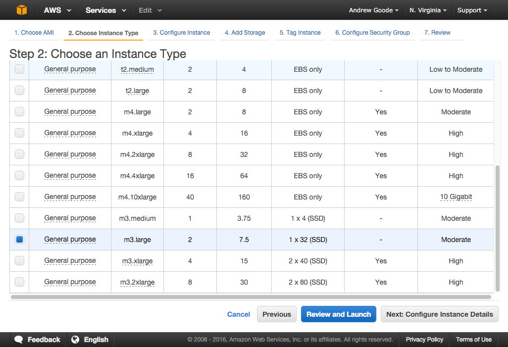
Go with default instance details and click the "Next: Add Storage" button on the bottom right.
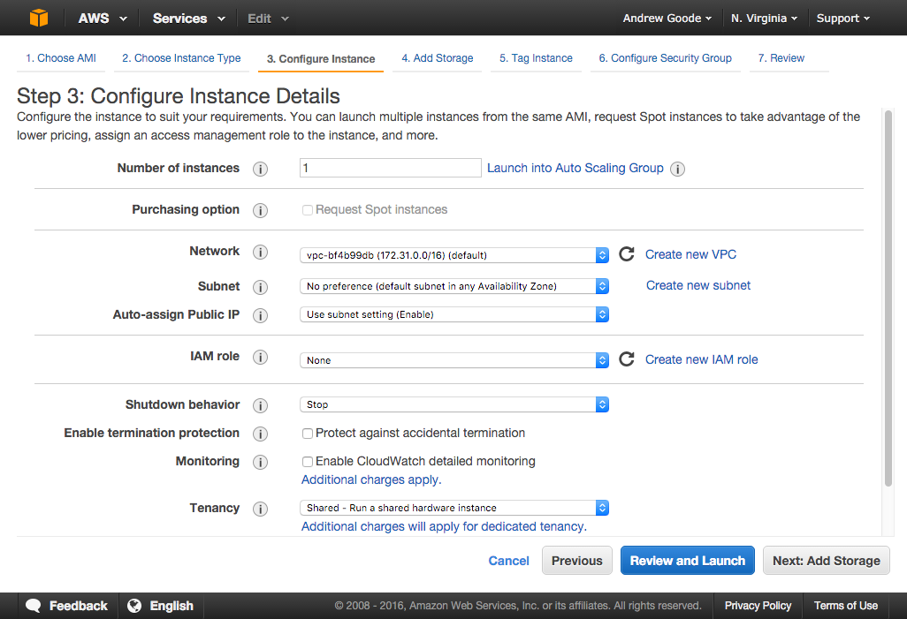
The next step is to configure storage volumes for your instance. We recommend adding an EBS volume that has at least 50 GB. We will use this volume to store the data for our npm On-Site registry, and using EBS will make it easy to create snapshots of your package data for backup or transfer purposes.
Click the "Add New Volume" button, select "EBS" as the "Volume Type", and enter your desired amount of storage in "Size". Then click the "Next: Tag Instance" button on the bottom right.
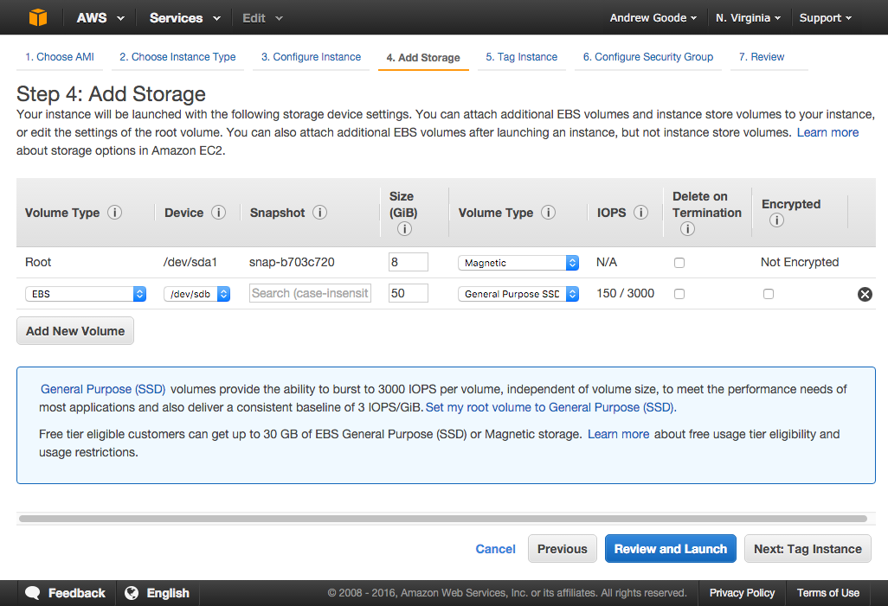
Give your instance a name and click the "Next: Configure Security Group" button.
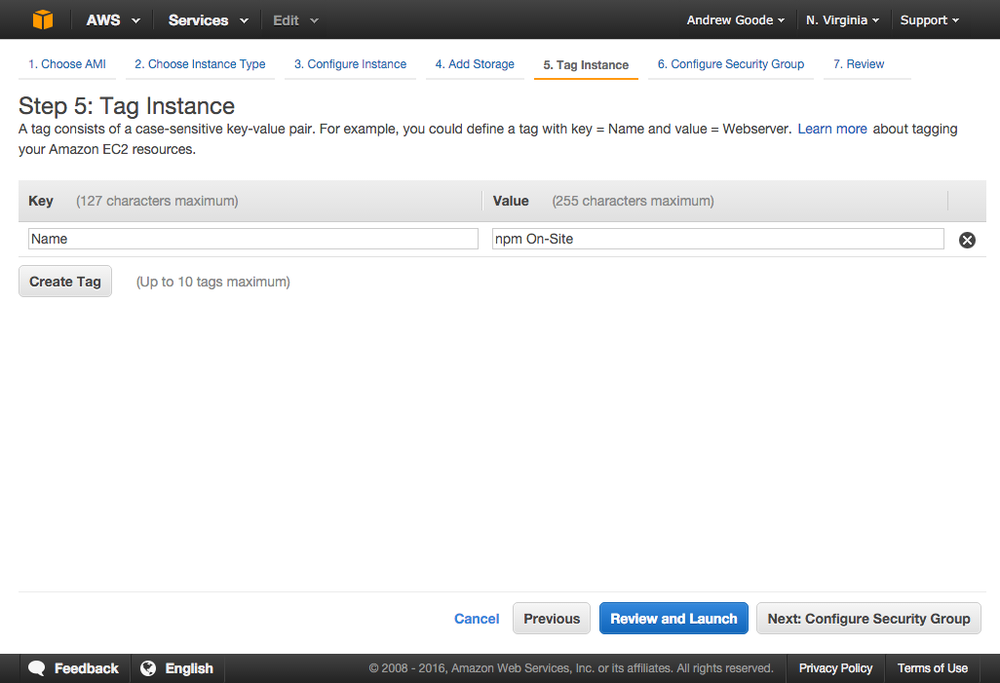
Choose "Select an existing security group" at the top and then select the Security Group you created in step 1 from the list. Then click the blue "Review and Launch" button.
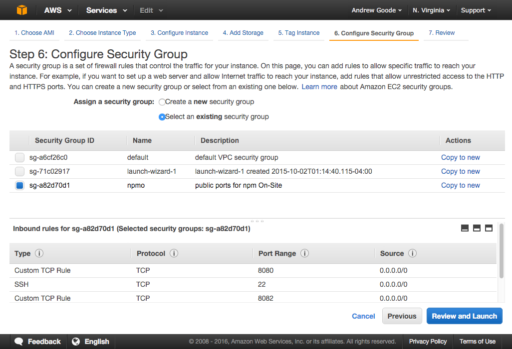
Review your settings and click the blue "Launch" instance when you are satisfied. This will open a dialog to select or create a key pair that you will need to access your instance over SSH.
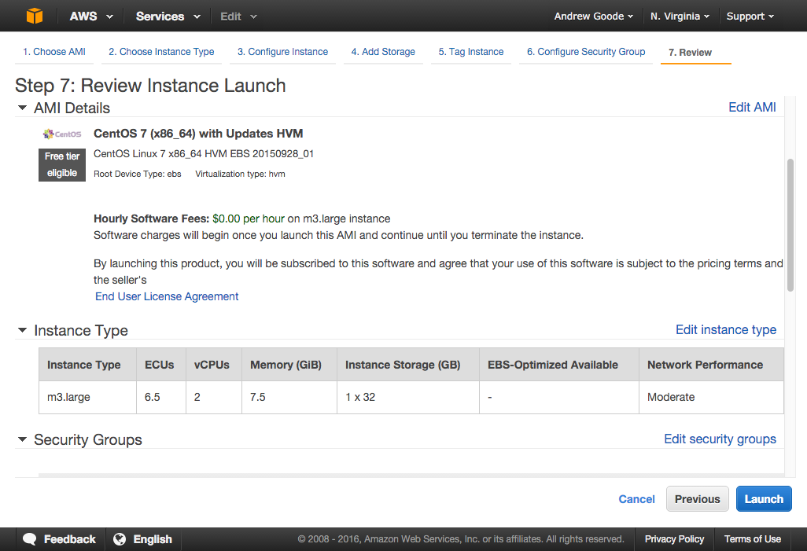
In the dialog, select "Create a new key pair" if you do not already have one. Give it a name and click the "Download Key Pair" button. Remember where you save this file as you will need it to SSH into your server. Once you have downloaded the PEM key pair file, click the blue "Launch Instances" button.
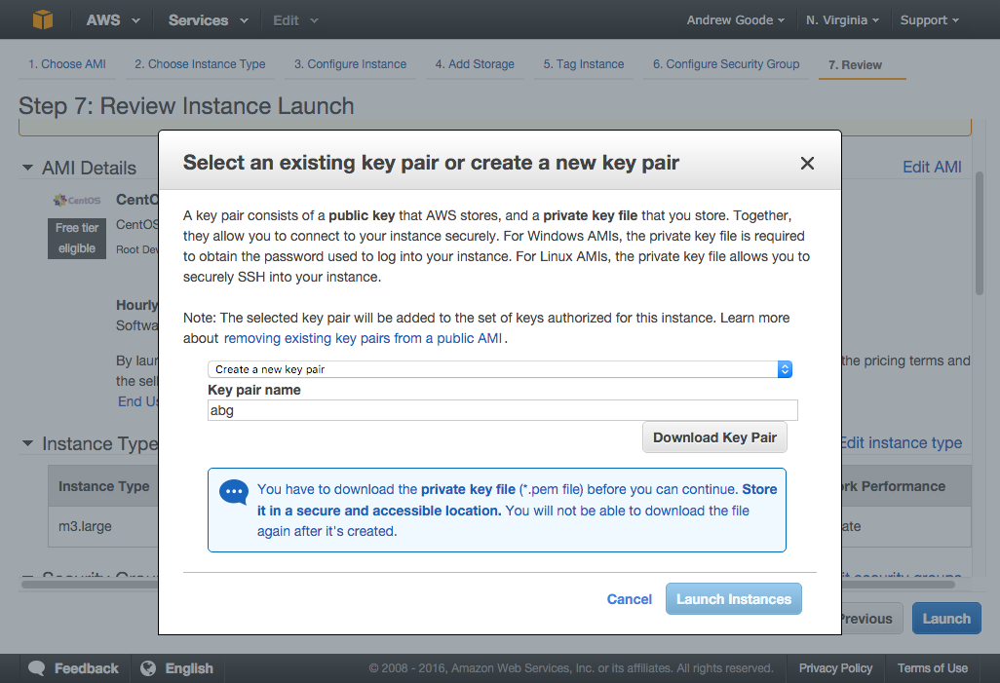
Wait for your instance to launch, and view its status in the Instances list.
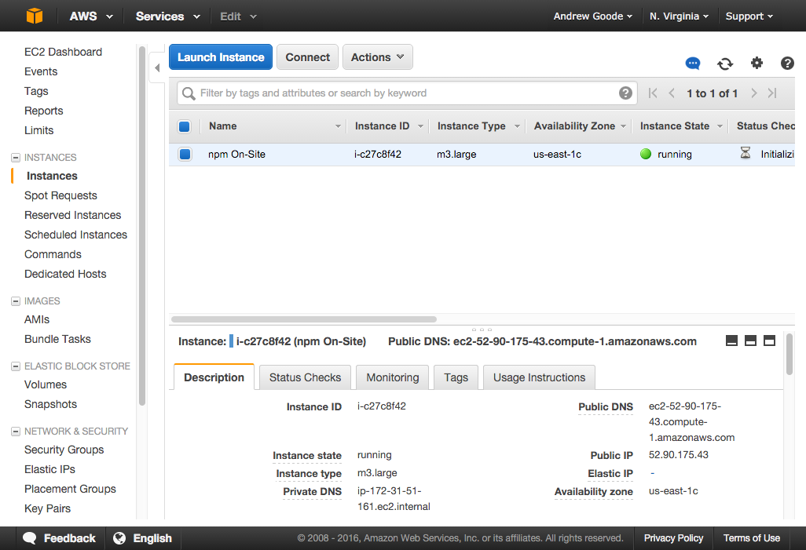
Note that if you're running your EC2 instance in a private AWS VPC, then you may need to explicitly set your network interface MTU setting to 1500. You can read about why and how to do this in the AWS docs.
Now that we have a server instance up and running, we need to prepare our attached EBS volume for use. Note that it will be attached but not formatted or mounted initially.
Access your server using the PEM key pair file via SSH. For Mac or Linux users, use the canonical ssh CLI program. For Windows users, try PuTTY. You can find the public IP for your server in the Instances list. Note that for CentOS 7, the username is centos, but if you chose a different AMI the username may be different (e.g. ubuntu for Ubuntu, ec2-user for RHEL, or admin for Debian).
$ ssh -i ~/.ssh/my-key-pair.pem centos@<public-ip>
First find the volume's device name, e.g. /dev/xvdb, using the lsblk command:
$ lsblkNAME MAJ:MIN RM SIZE RO TYPE MOUNTPOINTxvda 202:0 0 8G 0 disk└─xvda1 202:1 0 8G 0 part /xvdb 202:16 0 50G 0 disk
Let's quickly verify that our volume does not yet have a file system:
# sudo file -s <device> $ sudo file -s /dev/xvdb/dev/xvdb: data
The output should say data, meaning there is no file system formatted on the volume yet. Let's add one:
# sudo mkfs -t ext4 <device> $ sudo mkfs -t ext4 /dev/xvdbmke2fs 1.42.9 Filesystem label=OS type: LinuxBlock size=4096 Fragment size=4096 Stride=0 blocks, Stripe width=0 blocks3276800 inodes, 13107200 blocks655360 blocks reserved Writing inode tables: done Creating journal : doneWriting superblocks and filesystem accounting information: done
Now we can create a mount point, like /data, for our formatted volume:
# sudo mkdir <mount_point> $ sudo mkdir /data
Then we can mount the volume to the mount point and check it with the df -h command:
# sudo mount <device> <mount_point> $ sudo mount /dev/xvdb /data$ df -hFilesystem Size Used Avail Use% Mounted on/dev/xvda1 8.0G 823M 7.2G 11% /devtmpfs 3.6G 0 3.6G 0% /devtmpfs 3.5G 0 3.5G 0% /dev/shmtmpfs 3.5G 17M 3.5G 1% /runtmpfs 3.5G 0 3.5G 0% /sys/fs/cgroup/dev/xvdb 50G 53M 47G 1% /data
So far, so good. In order to preserve the mount on reboot, we need to add an entry to fstab like so:
# keep the original fstab config in case we mess up sudo mv /etc/fstab /etc/fstab.orig# copy the original fstab config sudo cp /etc/fstab.orig /etc/fstab# and modify the new fstab config sudo vi /etc/fstab
Note that on CentOS we're using vi to edit the file. On other systems, you might be able to use nano instead.
With the file open, add an entry under the last line. In vi, go to the last line by hitting Shift + G and go to the end of the line with Shift + 4. Then insert a new line by hitting i to enter insert mode, use the right arrow key to move the end of the line and press Enter to add a new line as shown below (only the second line). On CentOS or RHEL, use defaults,nofail as the fs mount options; on Ubuntu or Debian, use defaults,nofail,nobootwait.
#<device> <mount_point> <fs_type> <fs_mount_ops> <fs_freq> <fs_passno> /dev/xvdb /data ext4 defaults,nofail 0 2
In vi, exit insert mode with the Escape key and save and exit by entering :wq.
Now we should test our new fstab config. This command should give no output if everything is ok:
$ sudo mount -a
Let's make sure we have proper file permissions on our new mount point, and let's create a new directory there that will house all of our registry data:
$ sudo chown -R $(whoami):$(id -gn) /data$ mkdir /data/npmo
Our EBS volume is now ready to go, and we can install Node.js and npm On-Site!
In this step, the walkthrough will follow standard installation, but we'll hit the highlights.
First install Node.js and update npm. Note that this command is specific to CentOS or RHEL:
$ curl -sL https://rpm.nodesource.com/setup_4.x | sudo -E bash -$ sudo yum -y install nodejs$ sudo npm install npm@latest -g
Then install npmo and answer any prompts:
$ sudo npm install npmo -g --unsafe
Once that is done, complete the installation by configuring your On-Site instance via the admin web console at https://<your-server>:8800. At this point we will defer to the installation doc, with the exception that we should configure our storage settings to use our mounted EBS volume.
When you reach the Settings page, find the "Storage" section and change the /usr/local/lib/npme path prefix to /data/npmo for all configured paths:
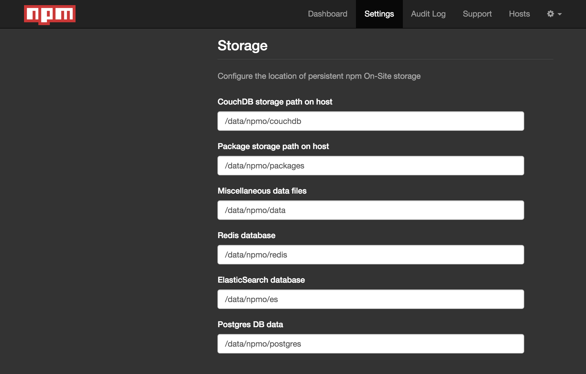
For testing purposes, you may want to select "Open" as the "Authentication" option.
Once your configuration settings are saved, you will be prompted to start the registry components and go to the Dashboard view. All the components will be downloaded and started as lightweight containers. Once you see a status of "Started", your registry is ready for use!
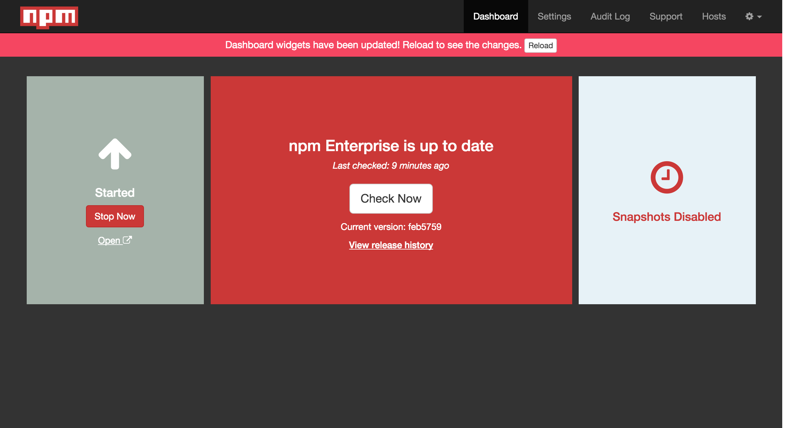
Back at the terminal prompt of your local machine, let's configure your npm CLI client to use your new private registry.
Authenticate with your registry and associate the registry to a scope name. The scope is a namespace or prefix that you will use for your private packages.
$ npm login --registry http://<your-server>:8080 --scope @demo
Now whenever npm sees the @demo scope in a package name, like @demo/test-pkg, it will automatically publish to or install from your private npm On-Site registry.
To quickly verify this, let's create a tiny module and publish it as a private package:
$ mkdir test-pkg$ cd test-pkg$ npm init -y --scope @demo$ echo "module.exports = 'test successful'\n" > index.js$ npm publish
Visit your registry's website at http://<your-server>:8081/ and find the @demo/test-pkg package under "recently updated packages".
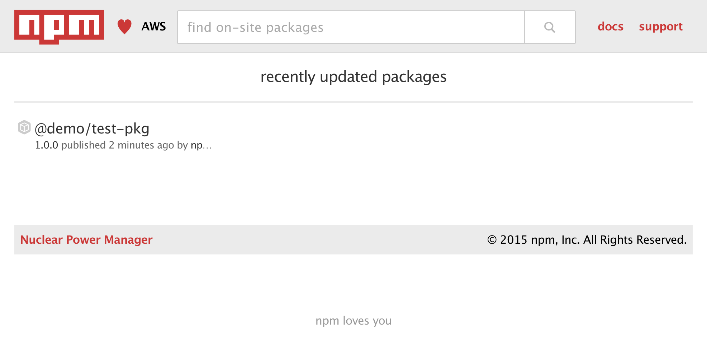
Now let's make sure we can install our private package:
$ mkdir downstream$ cd downstream$ npm install @demo/test-pkg$ node -e "console.log(require('@demo/test-pkg'))"test successful
As you can see, your package was downloaded to a local node_modules directory, allowing you to require() and use it.
So that's about it. Hopefully this demonstrated how easy it is to run your own private registry on AWS with npm On-Site.
For more advanced topics or questions, we encourage you to check out the rest of our docs or drop us a line at support@npmjs.com.
Happy publishing and installing!
Last modified February 11, 2016 Found a typo? Send a pull request!